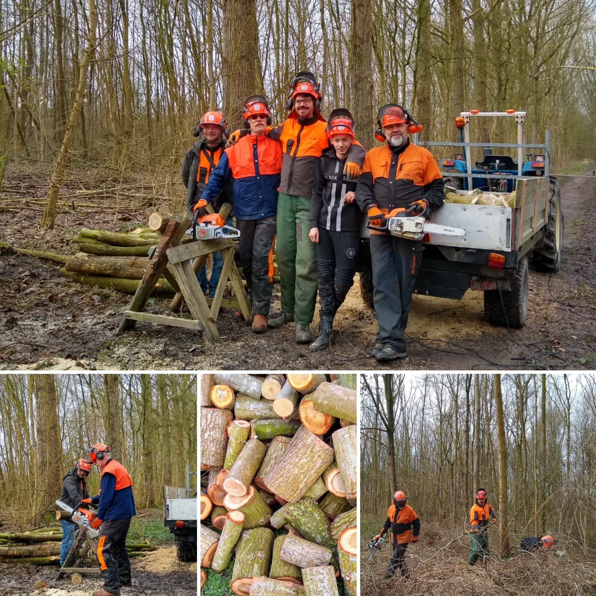

Over Ons
Stichting werXaam is een kleinschalig bedrijf gelegen in het biologisch landbouwgebied in Lelystad-Noord. We bieden een veilige werkplek voor mensen met een afstand tot de arbeidsmarkt. De meeste activiteiten die we verrichten vinden plaats in de openlucht. Daardoor is werXaam een plek, waar de gezondheid er alleen maar op vooruit kan gaan. We richten ons op de volgende activiteiten; Bosonderhoud en Onderhoud van tuinen. Iedereen helpt mee.
Op ons bedrijf kunnen de deelnemers verschillende ervaringen opdoen, die ze helpen om een plek te vinden in de arbeidsmarkt en/of maatschappij. Ben je geinterreseerd in een werkplek of wil je iets kopen.
